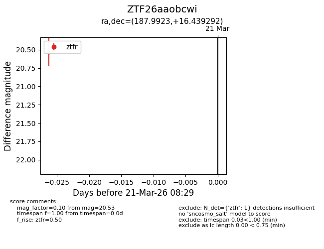
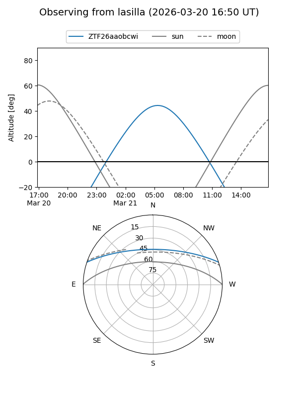
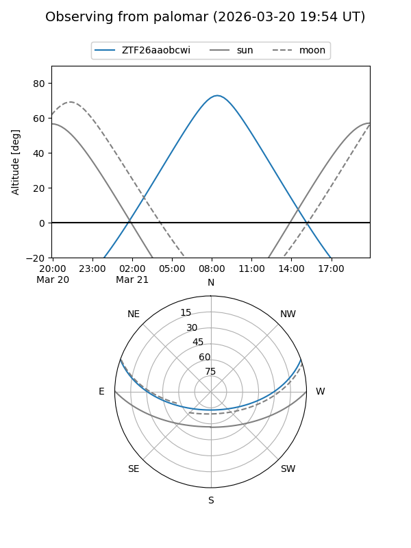

ZTF26aaobcwi
Target ZTF26aaobcwi at 2026-03-21 08:31
Aliases and brokers:
FINK: link
Lasair: link
ALeRCE: link
alt names
ZTF26aaobcwi (ztf,fink_ztf)
Coordinates:
equatorial (ra, dec) = 187.9923,+16.43929
equatorial (HMS+DMS) = 12:31:58.14,+16:26:21.45
galactic (l, b) = (279.0619,+78.39864)
Flags:
Photometry:
last ztfr=20.53
1 ztfr detections
Lightcurve

Visibility


Additional plots